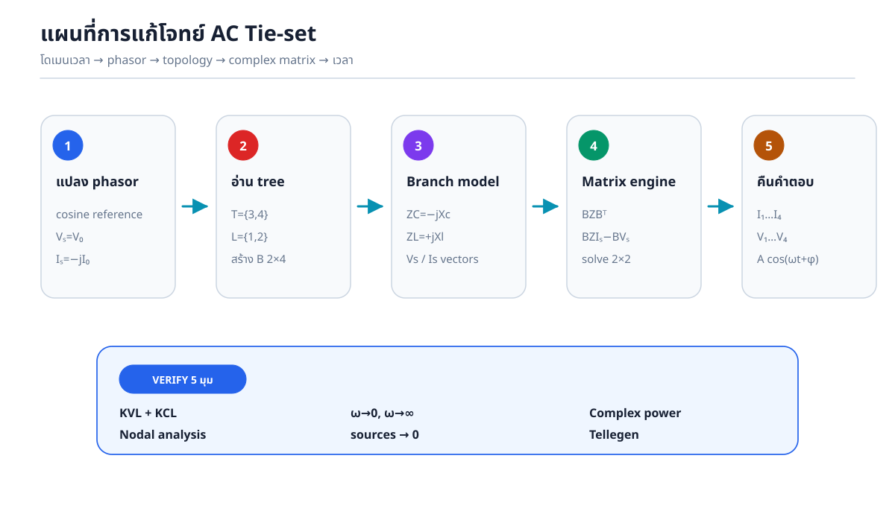
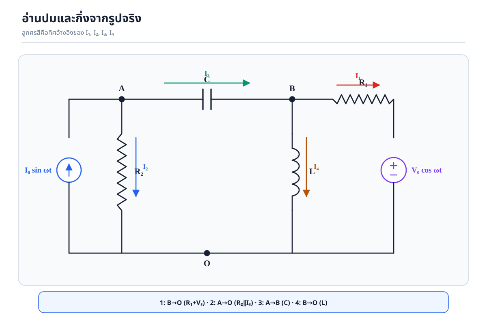
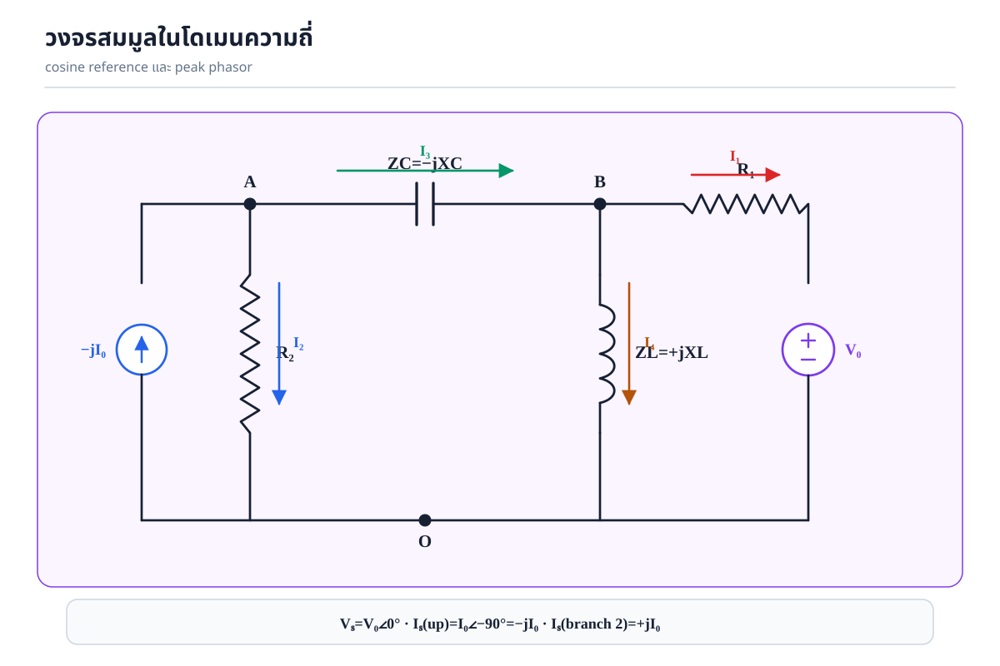
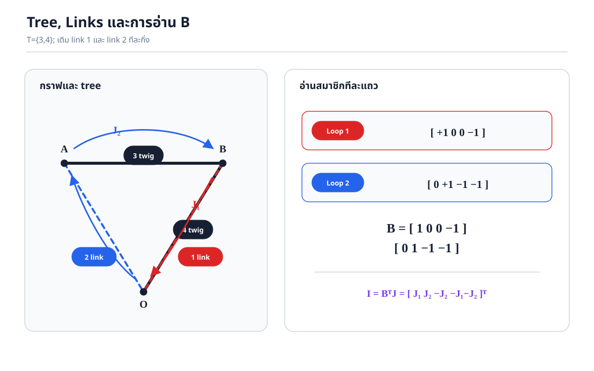
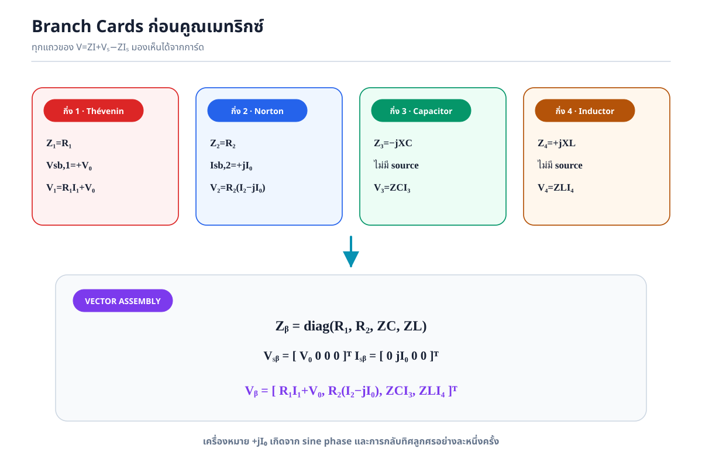
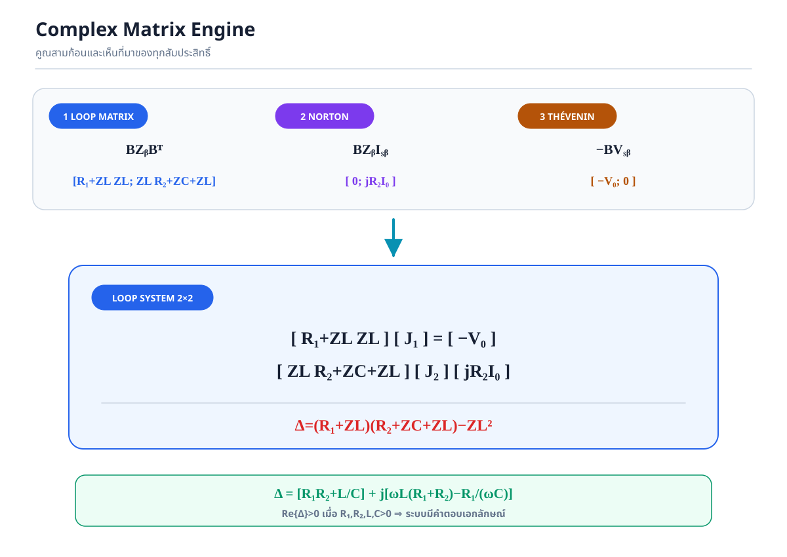
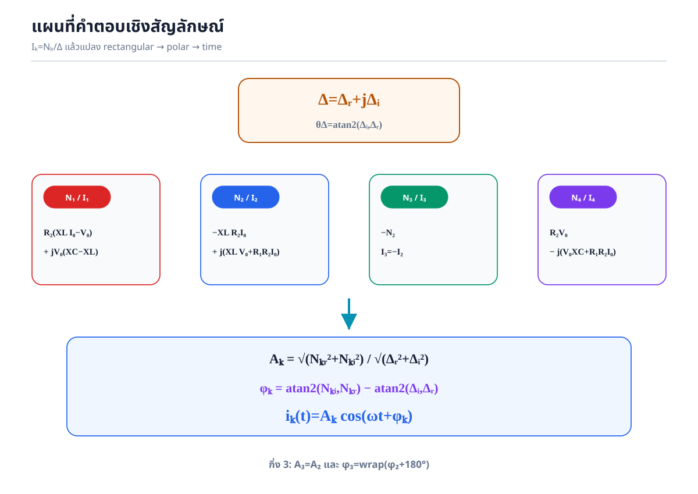
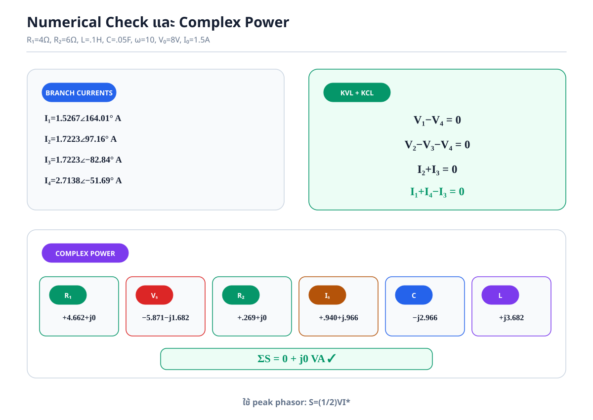

0. คำตอบหลักและเงื่อนไข
ให้ \(Z_C=1/(j\omega C)=-jX_C\), \(Z_L=j\omega L=jX_L\)
\[\boxed{\mathbf B=\begin{bmatrix}1&0&0&-1\\0&1&-1&-1\end{bmatrix}}\]
Loop impedance
\[\mathbf Z_l=\begin{bmatrix}R_1+Z_L&Z_L\\Z_L&R_2+Z_C+Z_L\end{bmatrix}\]Loop source
\[\mathbf E_s=\begin{bmatrix}-V_0\\jR_2I_0\end{bmatrix}\]มีคำตอบเอกลักษณ์: \(\Re\{\Delta\}=R_1R_2+L/C>0\) เมื่อ \(R_1,R_2,L,C>0\) ดังนั้น \(\Delta\ne0\) ทุก \(\omega>0\)

1. Phasor convention ที่ใช้ทั้งเอกสาร
ใช้ cosine reference และ peak phasor:
\[A\cos(\omega t+\phi)\longleftrightarrow A\angle\phi.\]Voltage source
\[V_0\cos\omega t\longleftrightarrow V_0\angle0^\circ=V_0\]Current source
\[I_0\sin\omega t=I_0\cos(\omega t-90^\circ)\longleftrightarrow-jI_0\]Power convention: เพราะเป็น peak phasor จึงใช้ \(\mathbf S=\tfrac12\mathbf V\mathbf I^*\) ไม่ใช่ \(\mathbf V\mathbf I^*\) โดยไม่มี \(1/2\)
2. อ่านปม กิ่ง และวงจรเฟสเซอร์
| กิ่ง | ทิศ | อุปกรณ์ | แรงดัน |
|---|---|---|---|
| 1 | \(B\to O\) | \(R_1+V_s\) | \(V_1=V_B\) |
| 2 | \(A\to O\) | \(R_2\parallel I_s\) | \(V_2=V_A\) |
| 3 | \(A\to B\) | \(C\) | \(V_3=V_A-V_B\) |
| 4 | \(B\to O\) | \(L\) | \(V_4=V_B\) |


3. Tree, Links และ \(\mathbf B\)
เลือก \(T=\{3,4\}\) เพราะครอบคลุม \(A,B,O\) โดยไม่เกิดวงปิด และได้ links \(L=\{1,2\}\)
Loop 1
\[B\xrightarrow{1}O\xrightarrow{-4}B\]\[[1\ 0\ 0\ {-1}]\]Loop 2
\[A\xrightarrow{2}O\xrightarrow{-4}B\xrightarrow{-3}A\]\[[0\ 1\ {-1}\ {-1}]\]
คูณกระแสกิ่ง
\[\begin{bmatrix}I_1\\I_2\\I_3\\I_4\end{bmatrix}=\begin{bmatrix}1&0\\0&1\\0&-1\\-1&-1\end{bmatrix}\begin{bmatrix}J_1\\J_2\end{bmatrix}=\boxed{\begin{bmatrix}J_1\\J_2\\-J_2\\-J_1-J_2\end{bmatrix}}.\]4. Branch Matrix แบบเห็นทุกแถว
\[\mathbf V_b=\mathbf Z_b\mathbf I_b+\mathbf V_{sb}-\mathbf Z_b\mathbf I_{sb}\] \[\mathbf Z_b=\operatorname{diag}(R_1,R_2,Z_C,Z_L),\quad\mathbf V_{sb}=\begin{bmatrix}V_0\\0\\0\\0\end{bmatrix},\quad\mathbf I_{sb}=\begin{bmatrix}0\\jI_0\\0\\0\end{bmatrix}.\]ก้อน \(Z_bI_b\)
\[\begin{bmatrix}R_1I_1\\R_2I_2\\Z_CI_3\\Z_LI_4\end{bmatrix}\]ก้อน \(Z_bI_{sb}\)
\[\begin{bmatrix}0\\jR_2I_0\\0\\0\end{bmatrix}\]\[\boxed{\mathbf V_b=\begin{bmatrix}R_1I_1+V_0\\R_2(I_2-jI_0)\\Z_CI_3\\Z_LI_4\end{bmatrix}}\]

5. Complex Matrix Engine ทีละก้อน
จาก \(\mathbf B\mathbf V_b=0\):
\[\boxed{\mathbf B\mathbf Z_b\mathbf B^{\mathsf T}\mathbf J=\mathbf B\mathbf Z_b\mathbf I_{sb}-\mathbf B\mathbf V_{sb}}.\]ก้อน \(\mathbf Z_b\mathbf B^{\mathsf T}\)
\[\begin{bmatrix}R_1&0&0&0\\0&R_2&0&0\\0&0&Z_C&0\\0&0&0&Z_L\end{bmatrix}\begin{bmatrix}1&0\\0&1\\0&-1\\-1&-1\end{bmatrix}=\begin{bmatrix}R_1&0\\0&R_2\\0&-Z_C\\-Z_L&-Z_L\end{bmatrix}.\]คูณทางซ้ายด้วย \(\mathbf B\)
\[Z_{11}=R_1+Z_L,\quad Z_{12}=Z_L\]
\[Z_{21}=Z_L,\quad Z_{22}=R_2+Z_C+Z_L\]
\[\boxed{\mathbf Z_l=\begin{bmatrix}R_1+Z_L&Z_L\\Z_L&R_2+Z_C+Z_L\end{bmatrix}}\]
Source vector
\[\mathbf B\mathbf Z_b\mathbf I_{sb}=\begin{bmatrix}0\\jR_2I_0\end{bmatrix},\qquad-\mathbf B\mathbf V_{sb}=\begin{bmatrix}-V_0\\0\end{bmatrix}\] \[\boxed{\mathbf E_s=\begin{bmatrix}-V_0\\jR_2I_0\end{bmatrix}}.\]
6. แก้ \(J_1,J_2\) อย่างโปร่งใส
\[\begin{bmatrix}R_1+Z_L&Z_L\\Z_L&R_2+Z_C+Z_L\end{bmatrix}\begin{bmatrix}J_1\\J_2\end{bmatrix}=\begin{bmatrix}-V_0\\jR_2I_0\end{bmatrix}.\]
\[\Delta=(R_1+Z_L)(R_2+Z_C+Z_L)-Z_L^2\]
\[\boxed{\Delta=\left(R_1R_2+\frac LC\right)+j\left[\omega L(R_1+R_2)-\frac{R_1}{\omega C}\right]}.\]
Cramer’s rule
\[\boxed{J_1=\frac{-V_0(R_2+Z_C+Z_L)-Z_L(jR_2I_0)}{\Delta}}\] \[\boxed{J_2=\frac{Z_LV_0+(R_1+Z_L)(jR_2I_0)}{\Delta}}.\]7. กระแสทุกกิ่งและการแปลงกลับสู่เวลา
กำหนด \(X_L=\omega L\), \(X_C=1/(\omega C)\) และ \(I_k=N_k/\Delta\)
| กิ่ง | ตัวเศษ \(N_k\) | ความสัมพันธ์ |
|---|---|---|
| 1 | \(R_2(X_LI_0-V_0)+jV_0(X_C-X_L)\) | \(I_1=J_1\) |
| 2 | \(-X_LR_2I_0+j(X_LV_0+R_1R_2I_0)\) | \(I_2=J_2\) |
| 3 | \(-N_2\) | \(I_3=-I_2\) |
| 4 | \(R_2V_0-j(V_0X_C+R_1R_2I_0)\) | \(I_4=-I_1-I_2\) |

สูตร \(A_1\ldots A_4\) และ \(\phi_1\ldots\phi_4\) ที่แทนสัมประสิทธิ์เต็มทั้งหมดอยู่ใน solution.md §13
8. แรงดันกิ่งและแรงดันปม
\[\boxed{V_1=V_4=\frac{Z_LN_4}{\Delta}}\] \[\boxed{V_2=\frac{R_2(N_2-jI_0\Delta)}{\Delta}}\] \[\boxed{V_3=-\frac{Z_CN_2}{\Delta}}\]\[V_A=V_2,\qquad V_B=V_1=V_4\]
\[V_3=V_A-V_B=V_2-V_4\]
9. การตรวจคำตอบอิสระ
KVL
\[V_1-V_4=0\] \[V_2-V_3-V_4=0\]KCL
\[A:\ I_2+I_3=0\] \[B:\ I_1+I_4-I_3=0\]Nodal Analysis
\[\begin{bmatrix}\dfrac1{R_2}+j\omega C&-j\omega C\\-j\omega C&\dfrac1{R_1}+\dfrac1{j\omega L}+j\omega C\end{bmatrix}\begin{bmatrix}V_A\\V_B\end{bmatrix}=\begin{bmatrix}-jI_0\\V_0/R_1\end{bmatrix}.\]determinant ของ nodal matrix คือ
\[\boxed{\Delta_N=\frac{\Delta}{R_1R_2Z_LZ_C}}\]จึงได้ \(V_A=V_2\), \(V_B=V_1=V_4\) ตรงกับ tie-set analysis
10. Limiting Cases และ Complex Power
| กรณี | ผลทางกายภาพ |
|---|---|
| \(\omega\to0^+\) | \(C\) เปิด, \(L\) ลัดวงจร; \(I_3\to0\), \(I_1\to-V_0/R_1\), \(I_4\to V_0/R_1\) |
| \(\omega\to\infty\) | \(C\) ลัดวงจร, \(L\) เปิด; \(I_4\to0\), \(V_A\to V_B\) |
| \(V_0,I_0\to0\) | ทุกกระแสและแรงดัน \(\to0\) |
Tellegen ด้วย peak phasor
\[\sum S_k=\frac12\mathbf V_b^{\mathsf T}\mathbf I_b^*=\frac12(\mathbf B\mathbf V_b)^{\mathsf T}\mathbf J^*=\boxed{0}.\]ตัวต้านทานดูดกลืน real power, capacitor มี \(Q<0\), inductor มี \(Q>0\), ส่วนแหล่งจ่ายอาจดูดกลืนหรือจ่ายกำลังตามค่าและเฟสของวงจร
11. Interactive Phasor Lab
Δ—
I₁ = J₁—
I₂ = J₂—
I₃—
I₄—
V₁ = V₄—
V₂—
V₃—
KVL max—
KCL max—
ΣS—
กระแสในโดเมนเวลา
—
—
—
—

12. จุดดักที่พบบ่อย
- ในทิศลูกศรจริง \(I_0\sin\omega t\leftrightarrow-jI_0\); ค่า \(+jI_0\) เกิดเมื่อกลับมาอ้างทิศกิ่ง 2
- \(Z_C=-j/(\omega C)\), ไม่ใช่ \(+j/(\omega C)\)
- กิ่ง 4 เป็น \(-1\) ในทั้งสองแถวของ \(\mathbf B\)
- ใช้ transpose \(\mathbf B^{\mathsf T}\), ไม่ใช่ conjugate transpose
- peak phasor ต้องมี \(1/2\) ใน complex power
- \(I_3=-I_2\) หมายถึง phase ต่างกัน 180 องศา